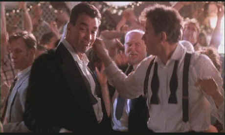

Paramount/1997/92m/ANA 1.85
 |
Kline and Selleck at the wrap.©Paramount |
Kevin Kline is likeable in
the role of teacher Howard Brackett. Joan Cusack got the big praise for her role as Emily
Montgomery, left startled and standing at the alter when Howard comes clean. She is wild
and ungirdled in a broad performance. But the best performance in this film is by Tom
Selleck. Selleck plays Peter Malloy, Hollywood reporter and gay man. Selleck thoroughly
enjoys making Malloy broadly entertaining. At the same time Selleck finds honesty in the
character that adds a refreshing level to In & Out. Supporting actors include
Debbie Reynolds and Wilfred Brimley as the parents left standing with the caterer. Matt
Dillon is genuinely funny as Cameron Drake, the terrible actor who sets everything in
motion.
Oz knows his way around comedy. Think of the wonderful
insanity of Dirty Rotten Scoundrels and The Little Shop of Horrors. It takes
a special kind of director to fine tune comedy and I think Oz makes the most of the
material of In & Out. It’s been awhile since Oz got to make audiences
laugh this much.
The finale of In & Out is reminiscent of Spartacus
and Dead Poets Society. It is consistent with the good nature of the film and the
final credit sequence is a real celebration.
This anamorphic transfer from Paramount is bright and sassy, a
perfect palette for an upbeat movie. Colors are fully saturated yet perfectly controlled.
Grain is handled especially well maintaining a consistently fine concentration in an
excellent replication of film grain. It’s not at all intrusive in the few places that
it exists. The image has a good sharpness balance, clear without causing undue artifacts.
The score is very enjoyable though not very aggressive in the surrounds. Just about the
most delightful sequence is the closing credits. Very macho.